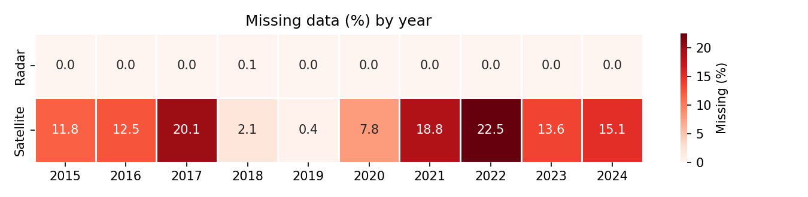
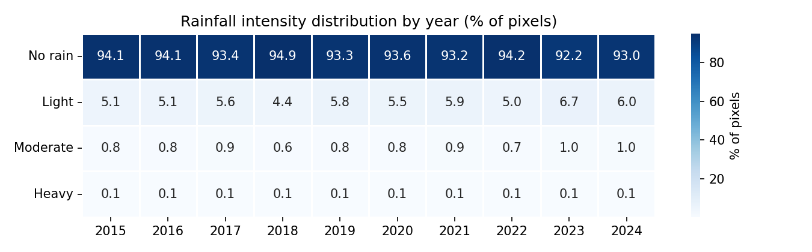
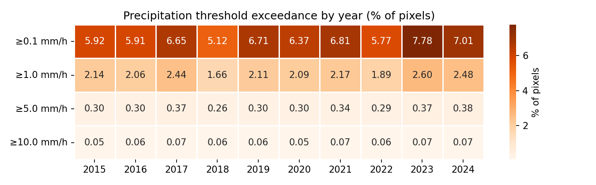
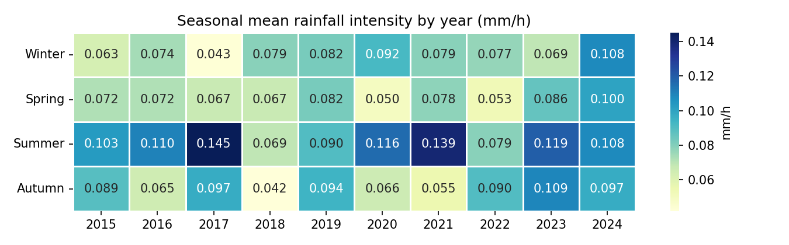
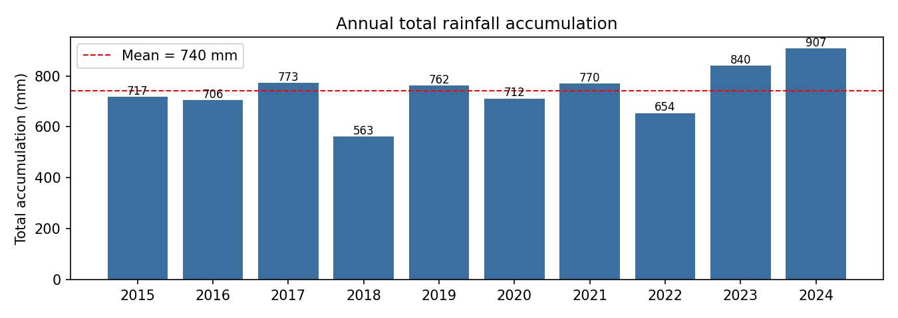

Dataset Statistics
Statistics computed over the full 2015–2024 RADOLAN/SEVIRI archive (Chapter 3.3 of the thesis).
Data availability (Table 3.3)
Radar observations are almost complete (only 0.1% missing, in 2018). Satellite observations have gaps in every year, largest in 2022 (22.5%), 2017 (20.1%), and 2021 (18.8%), attributed by EUMETSAT to temporary Rapid Scan Service interruptions.
| Year | Expected | Radar Avail. | Radar Miss. (%) | Sat. Avail. | Sat. Miss. (%) |
|---|---|---|---|---|---|
| 2015 | 105,120 | 105,120 | 0.0% | 92,664 | 11.8% |
| 2016 | 105,408 | 105,408 | 0.0% | 92,231 | 12.5% |
| 2017 | 105,120 | 105,120 | 0.0% | 83,986 | 20.1% |
| 2018 | 105,120 | 105,060 | 0.1% | 102,923 | 2.1% |
| 2019 | 105,120 | 105,120 | 0.0% | 104,710 | 0.4% |
| 2020 | 105,408 | 105,408 | 0.0% | 97,220 | 7.8% |
| 2021 | 105,120 | 105,120 | 0.0% | 85,386 | 18.8% |
| 2022 | 105,120 | 105,120 | 0.0% | 81,449 | 22.5% |
| 2023 | 105,120 | 105,120 | 0.0% | 90,865 | 13.6% |
| 2024 | 105,408 | 105,384 | 0.0% | 89,542 | 15.1% |

Radar NaN analysis (Table 3.4)
NaN rates are fairly stable across years, ranging from 39.16% (2015) to 43.34% (2023) of all pixels — not concentrated in any particular year.
| Year | Total Pixels | NaN Pixels | NaN (%) |
|---|---|---|---|
| 2015 | 104,068,800,000 | 40,750,907,928 | 39.16 |
| 2016 | 104,353,920,000 | 41,321,369,265 | 39.60 |
| 2017 | 104,068,800,000 | 40,944,601,010 | 39.34 |
| 2018 | 104,009,400,000 | 44,479,997,561 | 42.77 |
| 2019 | 104,068,800,000 | 44,826,856,010 | 43.07 |
| 2020 | 104,353,920,000 | 45,137,937,499 | 43.25 |
| 2021 | 104,068,800,000 | 44,986,338,827 | 43.23 |
| 2022 | 104,068,800,000 | 44,855,047,388 | 43.10 |
| 2023 | 104,068,800,000 | 45,099,765,241 | 43.34 |
| 2024 | 104,330,160,000 | 44,859,302,303 | 43.00 |
Rainfall intensity distribution (Table 3.5)
Around 92–95% of pixels record no rainfall in every year; moderate and heavy rainfall occur only in a small fraction of observations — a strongly right-skewed distribution that motivates the intensity-weighted loss (Loss Function) and two-bucket sampling (Preprocessing).
| Year | No Rain % | Light % | Moderate % | Heavy % |
|---|---|---|---|---|
| 2015 | 94.1 | 5.1 | 0.8 | 0.1 |
| 2016 | 94.1 | 5.1 | 0.8 | 0.1 |
| 2017 | 93.4 | 5.6 | 0.9 | 0.1 |
| 2018 | 94.9 | 4.4 | 0.6 | 0.1 |
| 2019 | 93.3 | 5.8 | 0.8 | 0.1 |
| 2020 | 93.6 | 5.5 | 0.8 | 0.1 |
| 2021 | 93.2 | 5.9 | 0.9 | 0.1 |
| 2022 | 94.2 | 5.0 | 0.7 | 0.1 |
| 2023 | 92.2 | 6.7 | 1.0 | 0.1 |
| 2024 | 93.0 | 6.0 | 1.0 | 0.1 |
| Total | 93.6 | 5.5 | 0.8 | 0.1 |

Categories: No Rain (<0.1 mm/h), Light (0.1–2.5), Moderate (2.5–10), Heavy (≥10).
Precipitation threshold analysis (Table 3.6)
Less than 0.1% of pixels reach or exceed 10.0 mm/h in any year — extreme rainfall is infrequent, reinforcing why severe events remain the hardest case to predict (see Results & Findings).
| Year | ≥0.1 mm/h (%) | ≥1.0 mm/h (%) | ≥5.0 mm/h (%) | ≥10.0 mm/h (%) |
|---|---|---|---|---|
| 2015 | 5.919 | 2.140 | 0.302 | 0.054 |
| 2016 | 5.913 | 2.058 | 0.296 | 0.055 |
| 2017 | 6.646 | 2.439 | 0.370 | 0.066 |
| 2018 | 5.119 | 1.657 | 0.264 | 0.055 |
| 2019 | 6.709 | 2.107 | 0.297 | 0.055 |
| 2020 | 6.365 | 2.090 | 0.301 | 0.051 |
| 2021 | 6.806 | 2.174 | 0.337 | 0.066 |
| 2022 | 5.768 | 1.889 | 0.293 | 0.057 |
| 2023 | 7.777 | 2.602 | 0.369 | 0.067 |
| 2024 | 7.015 | 2.480 | 0.376 | 0.071 |

Seasonal distribution (Table 3.7)
Summer generally contributes substantially to annual rainfall — the highest annual accumulation was in 2024 (907.0 mm) and the lowest in 2018 (562.6 mm). This seasonal disparity motivated restricting training/validation to the summer months (JJAS).
| Year | Win. (mm/h) | Spr. (mm/h) | Sum. (mm/h) | Aut. (mm/h) | Annual accum. (mm) |
|---|---|---|---|---|---|
| 2015 | 0.063 | 0.072 | 0.103 | 0.089 | 716.9 |
| 2016 | 0.074 | 0.072 | 0.110 | 0.065 | 705.5 |
| 2017 | 0.043 | 0.067 | 0.145 | 0.097 | 772.8 |
| 2018 | 0.079 | 0.067 | 0.069 | 0.042 | 562.6 |
| 2019 | 0.082 | 0.082 | 0.090 | 0.094 | 762.2 |
| 2020 | 0.092 | 0.050 | 0.116 | 0.066 | 711.6 |
| 2021 | 0.079 | 0.078 | 0.139 | 0.055 | 769.8 |
| 2022 | 0.077 | 0.053 | 0.079 | 0.090 | 654.3 |
| 2023 | 0.069 | 0.086 | 0.119 | 0.109 | 839.8 |
| 2024 | 0.108 | 0.100 | 0.108 | 0.097 | 907.0 |


Summary
- Most observations show few or no precipitating pixels; strong convective rainfall is rare.
- The intensity distribution is strongly right-skewed with a low median and occasional extreme values.
- These observations directly motivated: the log transform for radar data, NaN handling, the two-bucket quantile sampling strategy, and restricting dataset construction to convectively active months (JJAS).